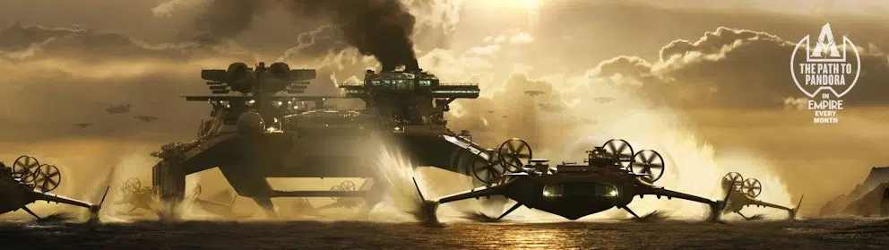

Après une attente prolongée, *Avatar 3 : Fire and Ash* se dévoile peu à peu, et nous promet une expérience cinématographique épique. James Cameron revient avec une nouvelle aventure où les Na'vi sont confrontés à des défis encore plus grands, avec la promesse d'une bataille d'une ampleur inédite.
Un film d'une ampleur inédite
Le film *Avatar 3* introduira des enjeux colossaux, notamment avec l'arrivée du Peuple des Cendres, qui semble bien moins pacifique que les autres tribus Na'vi. Une bataille finale spectaculaire entre la RDA, les Windtraders et les Na'vi pourrait bien être l'un des moments les plus marquants de la saga.
Les nouveaux antagonistes
- Le Peuple des Cendres : Une tribu Na'vi qui a survécu à une catastrophe naturelle, maintenant en guerre pour protéger ce qu'il reste de leur monde. Leur cheffe, Varang, incarnée par Oona Chaplin, est prête à tout pour défendre son peuple.
- Les Windtraders : Des marchands nomades de l'air, comparés aux caravanes de chameaux de la route de l'épice du Moyen-Âge. Leur rôle et leur impact sur Pandora restent mystérieux, mais leur présence ajoutent une nouvelle dynamique à l'univers de *Avatar*.
- La RDA : L'entreprise humaine, toujours aussi déterminée à exploiter les ressources de Pandora, se voit renforcée avec de nouveaux moyens technologiques impressionnants, dont un gigantesque bateau qui sera au cœur de la guerre.
Les enjeux émotionnels du film
Alors que les Na'vi sont confrontés à des ennemis extérieurs, c'est aussi leur unité interne qui sera mise à l'épreuve. Jake Sully et Neytiri devront prendre des décisions cruciales concernant leur famille et leurs enfants. Le film s'annonce comme une montagne russe émotionnelle, avec des tensions familiales fortes et des sacrifices déchirants.
« Ça va être une montagne russe émotionnelle. La façon dont La Voie de l’eau se terminait était incommensurablement douloureuse pour la famille Sully. Désormais, ils doivent prendre des décisions vraiment fortes. Est-ce qu’ils restent unis et trouvent un terrain d’entente, ou est-ce qu’ils empruntent des voies différentes ? Et Dieu sait ce qu’il va arriver aux enfants existants. […] Jim [Cameron] va continuer à traiter de thèmes aussi pertinents aujourd’hui. C’est l’une des raisons pour lesquelles j’aime travailler avec des réalisateurs comme lui. Ils utilisent leur œuvre pour lancer des conversations importantes. »
c'est ce que raconte Zoe Saldana, actrice de Neytiri
Une bataille d'une ampleur inédite
Le film promet des scènes de bataille exceptionnelles, avec une guerre qui s'annonce plus vaste et plus intense que tout ce que nous avons vu dans *Avatar : La Voie de l'Eau*. La RDA a construit un bateau gigantesque, presque une plateforme pétrolière flottante, et une bataille aérienne et maritime d'une échelle monumentale est attendue.
Date de sortie prévue : 17 décembre 2025
La sortie de *Avatar 3 : Fire and Ash* est fixée au 17 décembre 2025. Les fans attendent avec impatience la première bande-annonce, qui devrait arriver d'ici la fin du printemps 2025.
Conclusion
*Avatar 3 : Fire and Ash* s'annonce comme une continuation épique de la saga, avec de nouveaux personnages, des conflits géopolitiques et des dilemmes familiaux. La bataille pour Pandora n'est pas seulement une guerre, mais un véritable défi pour la survie et l'avenir des Na'vi. Reste à savoir comment Jake, Neytiri et leur famille feront face à cette nouvelle menace.
Que pensez-vous de ces nouveaux développements ? Le film saura-t-il satisfaire vos attentes ?